Benvinguts a la meua documentació
Git i Visual Studio Code
Anem a utilitzar GIT desde el Visual Studio Code.
Inicialització d'un nou repositori
-
Crea una nova carpeta per al teu projecte i obre-la amb VSCode.
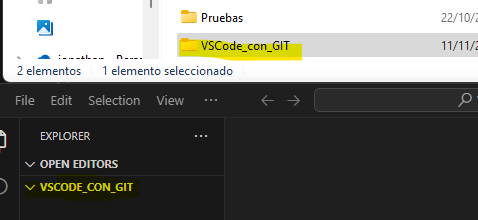
-
Des de la barra d'activitats de l'esquerra, selecciona la icona de control de codi font (Source Control, accessible amb Shift+Ctrl+G).

-
Fes clic en "Initialize Repository" per inicialitzar un nou repositori Git en aquesta carpeta.
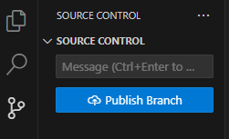
Afegint fitxers al repositori
-
Crea un nou fitxer anomenat fitxer1.md i afegeix-hi algun contingut. 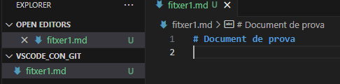
-
Des de la vista de control de codi font, veuràs que el fitxer apareix com a Untracked.
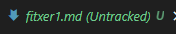
-
Fes clic en el símbol + al costat del fitxer per afegir-lo a l'àrea de preparació (staging area).
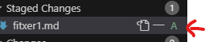
Fent un commit
-
Escriu un missatge de commit en el camp de text de la vista de control de codi font, per exemple, "Afegit fitxer1.md".
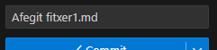
-
Fes clic en el símbol de confirmació (check) per fer el commit, o prem Ctrl+intro
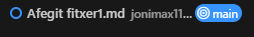
Modificant fitxers i fent nous commits
-
Modifica el contingut de fitxer1.md.
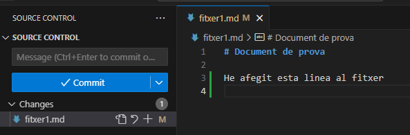
-
Afegeix els canvis a l'àrea de preparació i fes un nou commit amb un missatge descriptiu.
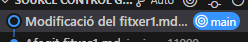
Esborrant archius
-
Crea un fitxer a la carpeta del prjecte (des de terminal o des de VSCode) anomenat tmp3.md amb un contingut qualsevol, afig-lo al control de canvis i fes el corresponent commit.
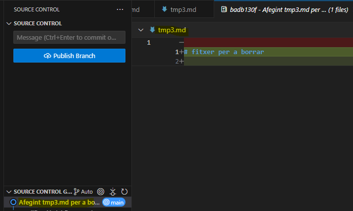
-
Des de l'explorador de fitxers de VSCode, selecciona el fitxer que vols esborrar i fes clic amb el botó dret del ratolí.
-
Selecciona l'opció "Delete" per esborrar el fitxer (o directament prem el botó de suprimir).
-
Ves a la vista de Control de codi font, i veuràs que el fitxer apareix com a "Deleted". Fes clic en el símbol + al costat del fitxer per afegir-lo a l'àrea de preparació (staging area).
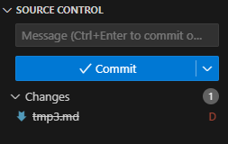
-
Escriu un missatge de commit en el camp de text de la vista de control de codi font, per exemple, "Esborrat fitxer tmp3.md".
-
Fes clic en el boto de confirmació per fer el commit.
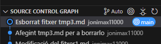
Reanomenant
-
Crea un fitxer tmp4.md a la carpeta de treball des de VSCode, afig-lo al control de versions i fes el commit corresponents.

-
En l'explorador de fitxers, fes clic sobre ell amb el botó dret, i seleccoina l'opció "Rename", o directament prem la tecla F2.
-
Canvia-li el nom, per exemple a tmp5.md.
-
Des de la vista de control de codi font, voràs que el fitxer amb el nom anterior tmp4.md apareix com a D - Deleted, i el fitxer amb el nom nou apareix com a U - Untracked. Observa que a la icona d'aquesta vista, ens indica que hi ha dos canvis, no un (és a dir, en lloc d'un renomenat, elimina un fitxer i afig l'altre).

-
Fes clic en el símbol + al costat del fitxer nou per afegir-lo a l'àrea de preparació (staging area) i al fitxer tmp3.md per confirmar l'eliminació del fitxer amb el nom antic.
-
Escriu un missatge de commit, per exemple, "Reanomenat tmp4.md a tmp5.md".
-
Fes clic en el botó de confirmació per fer el commit.
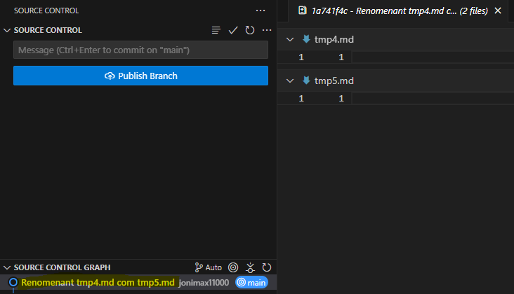
Eliminant arxius no seguits
-
Creem tmp6.md:
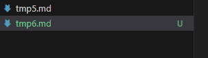
-
Descartem tmp6.md:
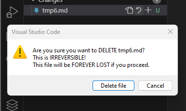